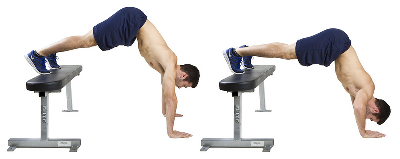

1. In order to gain mass you need to train with extra weight, the weight should be that you should barely master 6 reps if you get more then add more weight To gain mass you need to sleep 7-8 hours a day and eat right 2. You can still gain mass if you make more difficult options for elements  3. This is the second level to pass you must learn to do 15 reps per set. 4. This is the third level
To gain mass you need to sleep 7-8 hours a day and eat right